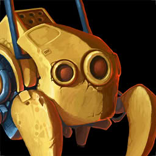
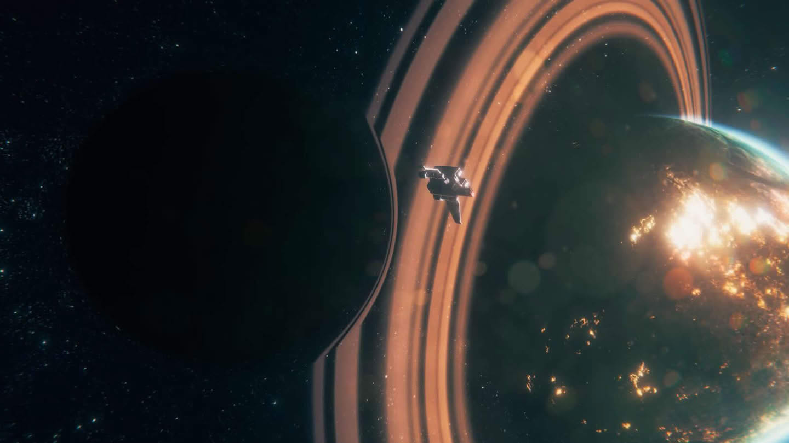
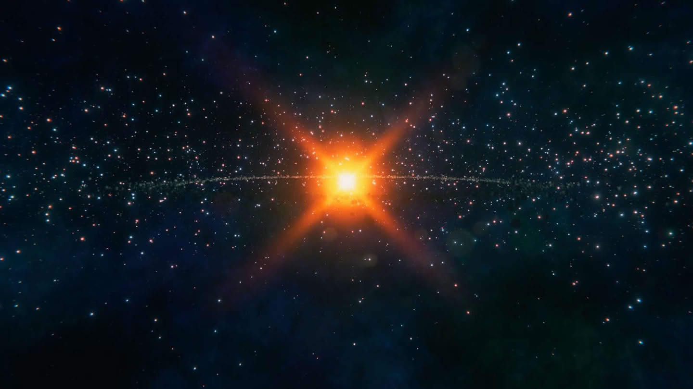
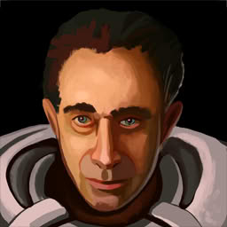
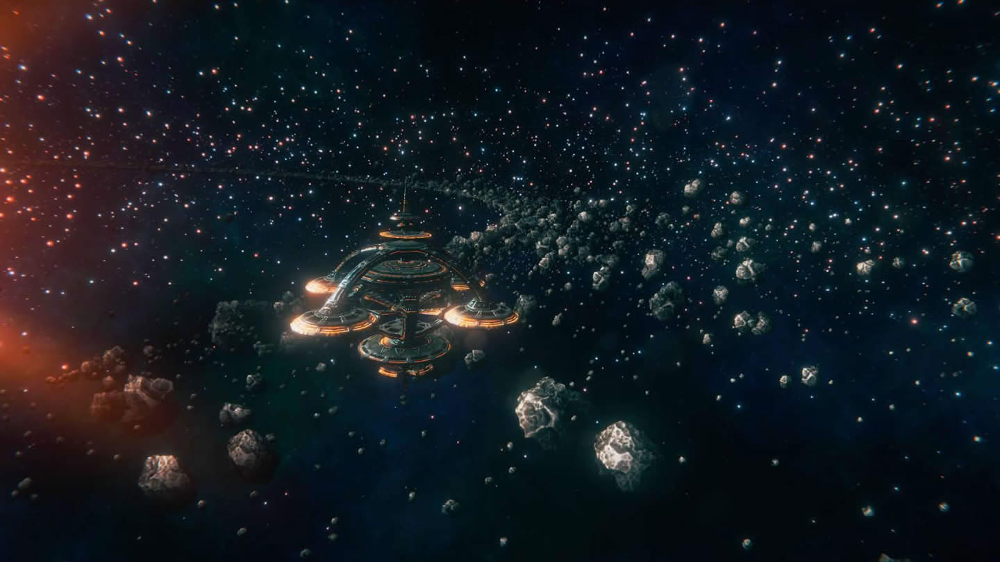
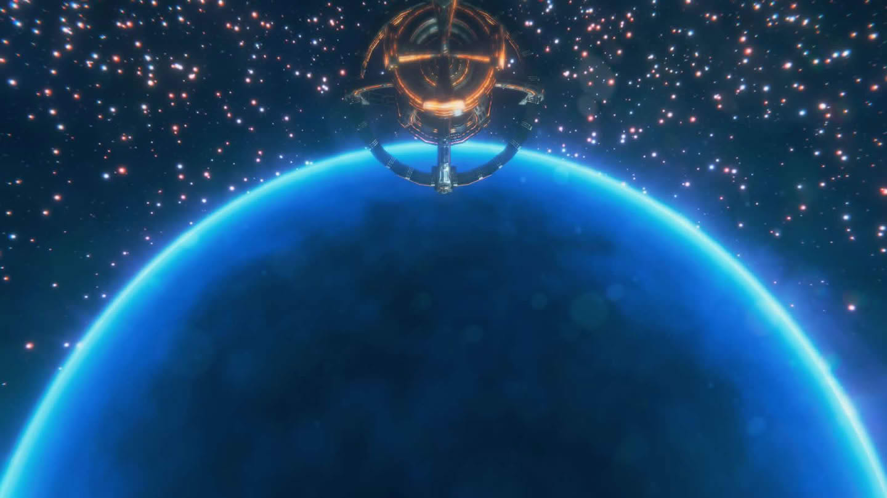
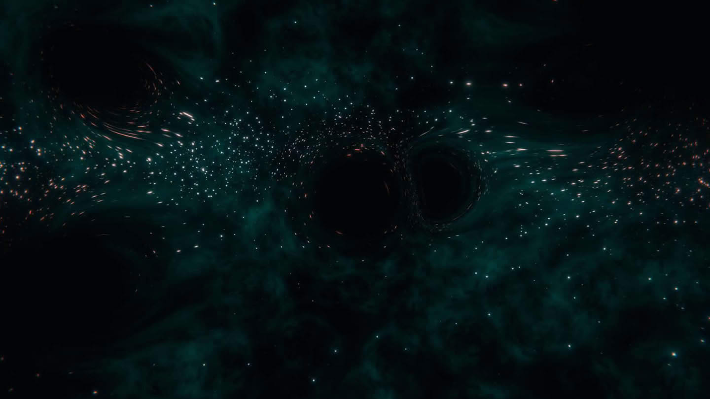
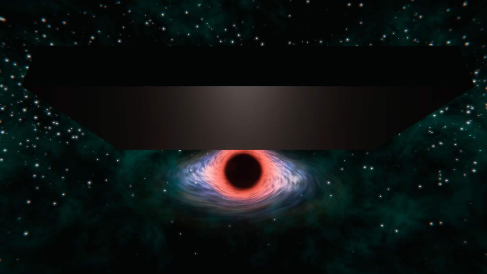
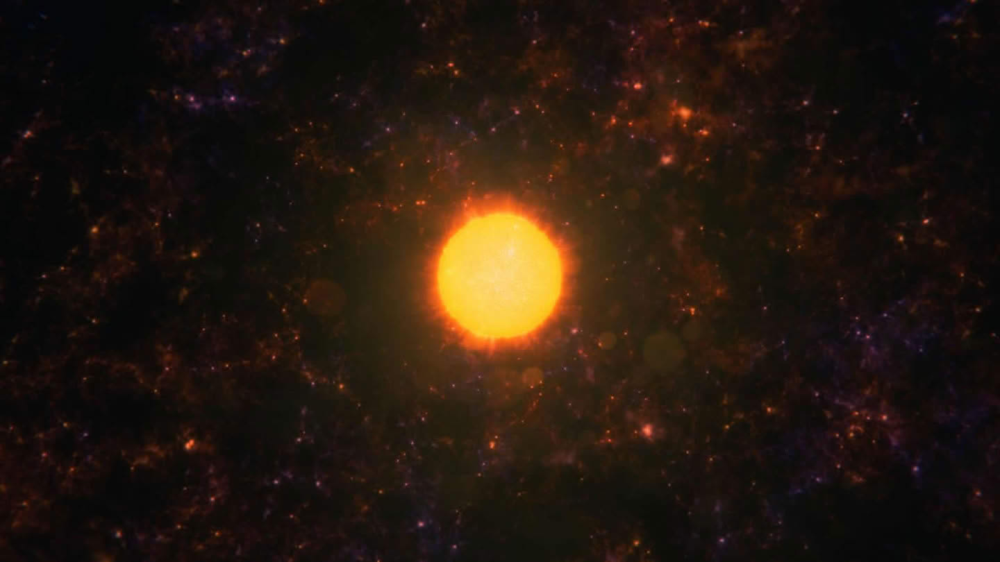
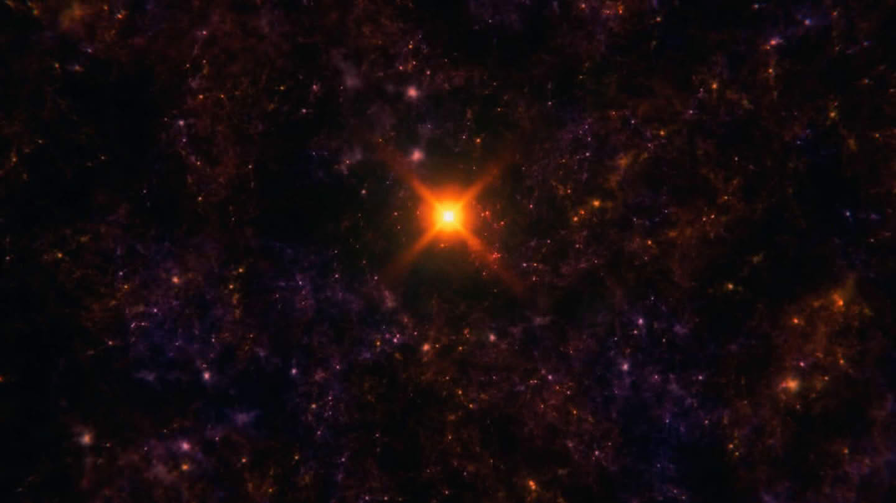

01. 历史博物
圆规四星区, 是理事会管理的疆域里, 最为靠近边陲的一个; 如今, 全宇宙都在逐渐低维化, 而这个区域正处于毁灭的最前沿; 我从主脑程序中被分离了出来, 成为一个独立的意识, 至今已经许多年了. 但是我依然没能习惯这副义体; 希望这次的工作能够顺利吧;
—————
if(场景开端){ 主脑: 科学官你好, 看来你已顺利到达 };
科学官: 是的, 我已经安全抵达, 目前正在准备开展工作;
主脑: 不断扩散的低维空间已逼近圆规四星区; 这里一直是我们语言科学研究的重要地区; 它记录了上亿种已消亡的语言及文物; 时间紧迫, 转移数据和文物已经来不及了; 母世界的维度科学院提出了一种构想: 以合适的方式收容三维物体, 即使跌落到二维也能保持其三维细节; 如果建造这样的博物馆来保留文物, 可能在将来的某天, 当我们的技术足够时, 还能复原他们; 请你务必在低维化空间到来之前, 建造足够多的博物馆(任务: 建造文明博物馆×8)(可选任务: 保持凝聚力 >= 50);

科学官秘书: 博物馆运用了最前沿的高维投影结构设计; 即便跌落到了低维空间, 也能保留所有三维的信息; 我个人对这些博物馆的数据能否被复原并不抱乐观预期; 就像宇宙的熵增是不可阻止的趋势一样, 目前并没有任何理论支持维度的逆转;—————
if(年份 >= 150Y){ 科学官秘书: 科学官, 天璇星系广播了自己; 那里曾是我们的一个移民地. 在很久前, 那里爆发了内战, 从那时起便和我们失去了联系; 我们收到了通信请求 };
 总督: 我是天璇星总督; 低维空间越来越近了, 整个星系都陷入了恐慌; 自内战以来, 我们失去了和母世界的联系, 一直都处于无政府状态; 现在雪上加霜, 许多城市陷于战火; 求求你们, 来稳住局面, 救救我们吧;
总督: 我是天璇星总督; 低维空间越来越近了, 整个星系都陷入了恐慌; 自内战以来, 我们失去了和母世界的联系, 一直都处于无政府状态; 现在雪上加霜, 许多城市陷于战火; 求求你们, 来稳住局面, 救救我们吧;
科学官秘书: 科学官, 天璇星系过去曾是我们的一个基础科研中心; 纵使现在它已经陷入了无政府状态, 但那里的研究机构也应该还保有珍贵的研究成果; 考虑到各种因素, 我认为我们还是有必要去一趟(任务: 拆除天璇座星系上所有的贫民窟);
—————
if(年份 >= 500Y){ 科学官秘书: 低维空间已经显现了 };
if(凝聚力 < 50){ 科学官秘书: 看来, 对于我们这样的唯物主义文明来说, 要让文明始终维持较高的凝聚力真的很难… };
—————
if(拆除天璇座星系上所有的贫民窟){ 总督: 科学官大人, 非常感谢您的驰援, 我们感谢您没有抛弃我们 };
科学官秘书: 经过几轮调解, 冲突终于平息了. 现在还剩下多少研究数据?
总督: 还有很多, 都是我们尽全力保护下来的, 我这就转交给您(奖励: 获得 2000 科技点);
科学官秘书: 总督, 这个星区即将不复存在, 请您带领该星区的难民, 回到母世界吧. 主脑会安排好你们的;
总督: 请等一下, 科学官大人, 还有件事;
科学官秘书: 那就抓紧报告, 天璇星总督. 科学官他还有很多其他事要做;
总督: 天璇星系多亏科学官的援助, 居民们才有幸从战火中重生; 但是第二星区, 马上就要迎来灭顶之灾了;
科学官: 第二星区在哪?
总督: 就是这里; 第二星区是之前内战的中心战场; 实际上我们天璇星系受内战的波及不多, 那里才真的是满目疮痍; 这里一共有七个星系, 数百亿人居住在这里, 他们甚至都不知道低维空间正在逼近; 科学官大人, 如果有可能的话救救他们吧!
科学官秘书: 你说的这些星系, 它们和天璇星系不一样, 目前, 它们已经不剩什么有价值的研究成果了; 科学官大人, 恕我直言, 主脑给你的任务是建造博物馆, 时间紧迫, 希望你不要把资源浪费在无关紧要的事情上(可选任务: 营救所有贫民);
—————
if(营救所有贫民){ 总督: 科学官, 感谢您不辞辛劳地拯救了我们, 大家会永远记住您的 };
科学官秘书: 您在无谓的事情上浪费了时间资源, 我会如实向主脑报告的;
if(建造文明博物馆×8){ 科学官: 博物馆已全部建造完成, 所有研究数据都能得以保留了 };
主脑: 做得很好, 现在圆规四快被低维化了, 赶快回来吧;
—————

其实我们都明白, 在这场与低维的战争之中, 我们是不可能胜出的. 我们所做的一切努力, 只不过是为了延缓灭亡的到来; 而在这场时空竞赛中, 我们只能不停逃窜; 但即便是如此, 我还是会尽我所能, 去做一切我应该做的事; 因为这是我诞生在这个世界的职责;02. 古代遗迹

距离上次的撤离行动, 已经过去了整整 200 年; 而在这段时间里, 又有数个星系相继沦陷进低维空间. 我们的文明岌岌可危; 由于圆满地完成了上次的工作, 我被派到了海角六, 执行一项绝密任务;—————
if(场景开端){ 主脑: 好久不见, 这次任务又要辛苦你了;
科学官: 这是我的荣幸;
主脑: 这位是海角六的研究员, 他将向你解释我们的行动;

研究员: 科学官您好, 那我就直入正题了; 如你所见, 目前整个文明都面临着被低维化的危机; 我们现在能做的, 除了袖手旁观, 就只有像之前圆规四一样不停地建造博物馆; 那终究不是治本之策. 因此, 我们建立了这个维度实验室, 希望找到逆转低维的方法; 希望您能为我们的研究提供科研资源的支持(任务: 完成 7 次理论突破)(可选任务: 凝聚力不要低于 50);if(凝聚力 < 50){ 科学官秘书: 看来, 对于我们这样的物质主义文明来说, 要让文明始终维持较高的凝聚力真的很难… };
—————
if(年份 >= 50Y){ 研究员: 尽快找到逆转低维的方法, 是我们文明的唯一生路; 我们在这片星域进行研究, 有特殊原因的; 这里曾属于一个已灭亡的古代科技文明; 它们曾在维度研究上相当有建树. 努力搜索这片星域, 也许有意想不到的收获 };
if(首次殖民到有古代图书馆的星系){ 研究员: 这应该就是古代文明的遗迹了, 希望能找到有用的东西; 我们得快点. 这片星域还有其他文明, 如果遗迹被他们破坏掉, 就棘手了 };
if(再次殖民到有古代图书馆的星系){ 研究员: 又是个遗迹, 让我们来探查一番… 噢, 真是了不起的知识! 原来是这样 };
—————
if(与太阳系逃难者文明正式建交){ 研究员: 你们是谁 };
 逃难者: 我们, 是来自太阳系的逃难者;
逃难者: 我们, 是来自太阳系的逃难者;
研究员: 那是什么地方?
逃难者: 那是拥有八颗行星的恒星系, 已被低维空间吞没;
研究员: 实际上, 我们正在这片星域寻找一些古代遗迹, 你们是否有线索?
逃难者: 古代遗迹? 我想我们应该是能够提供一些帮助的. 不过如果你们想要线索, 就得拿有价值的东西换;
if(签订贸易协定){ 逃难者: 我们在这偶然见过一个庞大的古代遗迹群, 不知是不是你们要找的, 但也许值得调查一下 };
—————
if(完成了七次理论突破){ 研究员: 科学官, 我们已经得出研究结果了 };
科学官: 所以怎么样了?
研究员: 很遗憾… 尝试了各种方法, 都无法逆转维度衰变; 如果哪天知道如何逆转低维化, 估计离能够实现逆熵也不远了;
科学官: 谢谢你们的辛勤工作. 现在看起来, 我们离答案仍然十分的遥远;
研究员: 不过, 我们还有一个好消息的;
科学官: 是什么好消息?
研究员: 我们研读古代遗迹的内容时, 在其中找到了关于知识看管者的故事; 一些同事提出, 正是知识看管者建造了遗迹;
科学官: 那不是神话吗?
研究员: 不尽然. 现在看来, 知识看管者并非是我们的先祖虚构的, 他们至少曾真实存在过. 只是他们的先进超出了我们的想象, 且考古人员之前极少发现其存在的证据; 不过我认为, 这片星区的遗迹, 应该不是知识看管者的直系文明后代建造的; 应该是某个古代文明继承了他们的一些知识, 并建造了这些遗迹来记录;
科学官: 发现有何利益?
研究员: 知识看管者曾研究出逆转低维的方法, 能将低维化的空间重新拉回高维. 遗迹的建造者知道这个方法储存在哪儿;
科学官: ! ! ! ! ! ! !
研究员: 建造遗迹的文明, 记载了宇宙中的四个坐标, 我们将其称之为关键坐标, 两两连线确认了一点. 那里有一个图书馆, 记载了他们对升维理论的研究; 基于遗迹的发掘, 目前, 我们已经知道了其中两个关键坐标数据; 而另外两个关键坐标的数据, 如果遗迹记载正确的话, 应该被分别藏在了水墨星区和紫罗兰星区;
科学官: 知道了, 我会向主脑报告此事;
主脑: 报告已收到. 请你即刻前往水墨星区, 寻找剩下的关键坐标的信息;
—————

知识看管者, 是这个宇宙最初存在的十个神级文明之一. 过去, 我们仅从太古时代文明考古发掘的零星发现中, 窥探了这个文明神秘的一角而已; 我们只知道, 那个文明是一个研究团体, 它是由不同的文明出逃的学者们组成. 他们为了获知和研究纯粹的知识, 背离了各自的家乡, 聚集到一起; 他们的科学成就曾达到了令人难以理解的高度, 研究成果几乎已是现代科学的天花板; 我们的研究人员找到了他们知识的尾迹, 这或许是我们对抗低维化的救命稻草; 这是命运, 还是偶然? 我们对知识看管者所留下的研究成果, 产生了巨大的好奇… 前路迢迢, 充满未知. 但默默等待毁灭命运的自己, 和我躬身奉献的静默着的文明, 又一次, 燃起了探寻真理的激情;03. 低维实验
自从装配了量子脑之后, 我已经很久都没有做梦了; 不过, 在报告了知识看管者遗留下的维度逆转研究成果后, 在那次休眠的周期中, 我久违地做了梦; 梦到我们找到了知识看管者留下的数据, 窥见了维度的真理, 并且重新让这个不断跌入低维的宇宙, 重新回到了高维度; 水墨星区是一个古老的星区. 我们根据资料了解到, 这里过去似乎曾是一个未知文明的低维试验场; 但在某次低维实验之中, 发生了严重的事故, 继而导致整个星区变得千疮百孔… 根据之前在海角六获得的遗迹数据, 关键坐标中的一个就被藏在这个星区;
—————
if(场景开端){ 主脑: 科学官, 时间已经不多了, 我们需要尽快得知剩余坐标; 该星区遍布低维空间, 很少有人靠近. 因此, 我们指派了整个文明中最富有经验的航行者来协助你 };
探险队长: 科学官你好, 我会协助你完成任务; 如你所见, 整个星区遍布低维空间, 障碍重重; 根据主脑传来的数据, 我们的目标应该就在这里了; 这个星区里几乎就没有天然的星系, 但是有大量的人造星系. 我们也许能从中, 找到一些资源补给(任务: 到达目标星系)(可选任务: 在 1500 年之内完成);
—————
if(年份 >= 50Y){ 科学官: 你们是谁 };
 低维警戒者: 我们是低维警戒者; 我们祖先一次失误导致这里遍布低维区域, 我们留守在此, 提醒不知情者绕过这片星区;
低维警戒者: 我们是低维警戒者; 我们祖先一次失误导致这里遍布低维区域, 我们留守在此, 提醒不知情者绕过这片星区;
科学官: 你们坚定不移的奉献精神真是令人钦佩. 我们来此地为寻找一个重要的星系, 你们愿意帮助我们吗?
低维警戒者: 如果你能提供对等帮助, 我们也许会考虑(可选任务: 获得低维警戒者的信任);
if(拒绝帮助低维警戒者){ 低维警戒者: 对你们来说, 这似乎太难了. 那祝愿你们自己能想办法抵达目标 };
if(给予低维警戒者帮助){ 低维警戒者: 感谢你们的贡献. 我们将一个人造星系赠与你们, 那里距离你们的目标会更近 };
—————

我们终于到达了目标星系了, 这是这一带唯一的恒星; 在这颗恒星的不远处, 赫然有一个小型空间站, 在围绕着它旋转; 空间站几乎是一个完美的球形, 表面光滑得无可挑剔. 我们只能看到一片被扭曲的天空, 映照着下方恒星的等离子火海; 我们顺利地找到了入口. 也许是建造者没有料到会有人会造访这里, 因此, 整个遗迹都没有设防; 而在空间站的最深处, 我们得到了一份数据. 毫无疑问的, 这就是我们一直在寻找的关键坐标; 现在, 我们距离结果, 就只差一个关键坐标, 很快就可以找到知识看管者留下的升维方法了;04. 神秘三角

我总是不由设想, 如果我们阻止了低维化的扩张, 宇宙中的文明间是否能少些战争? 如果生存空间不再如此稀缺, 文明间是否能放下猎枪, 相安无事了? 这也许只是不切实际的幻想; 低维空间的蔓延从未止步; 尽管我们无法确切知晓其他文明的状况, 但根据截获的宇宙流言, 我们有理由相信, 曾经不可一世的许多文明都已然灭亡; 紫罗兰, 传说中的高危地带. 大量的舰船航行到这里便失去了踪迹, 最勇敢的探险家也望而却步; 如今, 我们来到这里, 寻找最后一个关键的坐标数据; 这项任务能否完成将决定我们文明的存亡;—————
if(场景开端){ 探险队长: 科学官, 现在我们已经到了 };
科学官: 请你说明一下这片星域的状况;
探险队长: 这里比水墨星域更危险, 因为危险是看不见的;
科学官: 危险, 看不见?
探险队长: 是的, 水墨星域的低维空间, 至少能观测到. 但是这里; 现在我尚无法确切描述这些怪象, 我们会进一步调查的(任务: 到达目标星系)(可选任务: 在 1500 年之内完成);
—————
if(首次遭遇屏蔽空间){ 科学官: 怎么回事, 探险队为什么失去踪迹了 };
探险队长: 技术人员发现了一些异常现象; 这片星区存在着大量的球状屏蔽空间; 无论是什么信号, 哪怕是引力波, 也无法进入; 我们的探险队应该是误入了这样一个信号阻断区域;
科学官: 我们面临的环境, 竟如此严苛;
主脑: 这片星区还有很多原始文明, 屏蔽空间让他们无法得知外部信息; 在这片封闭区域内发展的文明会是什么状态, 是个非常有价值的课题; 如果能够找到这些文明, 对我们的社会学研究应该会很有助益(可选任务: 交流至少八个原始星系) };
—————
if(第一次殖民存在低维化装置的星系){ 探险队长: 天哪, 这是什么; 谁造了这么巨大的低维化装置; 快撤离! 快撤离 };
if(第二次殖民存在低维化装置的星系){ 探险队长: 这, 怎么可能; 这个星系上也有个低维化装置的建筑; 我们走运了, 它没有被激活… 但保险起见, 我们最好还是现在就拆掉它 };
if(第三次殖民存在低维化装置的星系){ 这个星系也有一个低维化装置; 它好像出了些故障, 真是万幸. 实在太惊险了 };
if(殖民目标星系){ 探险队长: 历尽万难我们终于到达 };
—————

我们终于到达这一带唯一的黑洞; 在黑洞的视界边缘, 我们发现了一座静静悬浮的空间站, 仿佛已经存在了数万年; 整个空间站是纯黑色构造, 黑得异常深邃, 以至于如果不是黑洞吸积盘的微弱发光, 我们甚至很难在光学波段下观察到它; 空间站是个立方体, 长宽高分别为 1:2:4; 古老而深不可测的神级文明, 就这样默默地凝视着后来探访者的拙劣与幼稚; 我们在空间站最深处得到了一个数据, 那是我们要寻找的关键坐标; 现在, 所有的关键坐标都已经集齐了, 我们终于能够定位知识看管者存储升维研究方法的精确位置;05. 最后答案

关键坐标都已取得, 它们揭示了目标: 独眼巨人阿尔法星系; 那离我们不远, 传说属于知识看管者; 我们一半疆域都被低维空间吞噬了, 寻找阻止低维空间扩散的方法迫在眉睫; 主脑给予这次行动以最高优先级, 我们的舰队浩浩荡荡地向独眼巨人阿尔法星系驶去;—————
if(场景开端){ 科学官秘书: 科学官, 我们已经接近目标星系了, 先遣队发现了一个无人的星系, 可以作为我方的前哨 };
科学官: 好, 许可驻扎;
科学官秘书: 等等, 那些是什么… 有大量不明舰队向我们靠近; 科学官, 未知舰队攻击了我们的先头部队! 我们侥幸躲过了它们的攻击! 我们在这片星域检测到大量武装力量, 似乎要阻止我们进入这片星域; 我们接到了通讯请求, 神秘舰队似乎要和我们通话; 一阵刺耳的沙沙声后我们听到了他们的声音;
—————
科学官: 前方舰队, 我们无意纷争. 你们是谁, 报上名来;
 警觉思考者: 我们是警觉思考者, 知识看管者的后人. 这片星域, 是我们的禁地, 快快离去;
警觉思考者: 我们是警觉思考者, 知识看管者的后人. 这片星域, 是我们的禁地, 快快离去;
科学官: 我们是来寻取知识看管者所留下的维度逆转科技的; 我们愿意提供任何你们想要的东西, 来换取进入禁区的特权;
警觉思考者: 我知道你们正在做的是什么样的事情. 但这里没有什么逆转维度的方法, 也没有谈判的余地. 离开这里, 否则我们会彻底击溃你们, 就像一直以来击败无数侵入者那样;
科学官秘书: 这片星域共有五个遗迹星系; 它们都被某种能量护盾所保护, 不用担心会被意外损毁; 我们需要在遗迹星系上, 建造发掘设施, 取得我们所需的信息(任务: 同时保持在 3 个遗迹星系建造有发掘设施)(可选任务: 消灭警觉思考者!);
—————
if(年份 >= 400Y){ 警觉思考者: 你们竟然还在觊觎着知识看管者的遗物, 这是无法被容忍的; 我们绝不会让你们得逞 };
科学官秘书: 科学官, 他们恐怕是有某种手段关闭遗迹, 我们需要抓紧占据遗迹(任务: 不能让警觉思考者关闭三个遗迹);
—————
if(警觉思考者关闭了一个遗迹){ 科学官秘书: 注意, 警觉思考者已经移民到了一个遗迹星系上面, 并且尝试关闭遗迹 };
if(警觉思考者关闭了二个遗迹){ 科学官秘书: 注意, 警觉思考者已经关闭了一处的遗迹 };
if(警觉思考者关闭了三个遗迹){ 科学官秘书: 我们没能完成任务. 他们已经关闭了三处遗迹, 我们不可能完成发掘了 };
if(任务失败){ 警觉思考者: 永远不要妄想寻找捷径, 也不要窥探超出你能力范围的知识 };
—————
if(第一次移民到遗迹所在星系){ 科学官: 多么宏伟的遗迹群… 我们终于来到了升维奥秘的栖身之处. 拯救我们的方法已经近在咫尺; 这个护盾到底是什么原理? 以我们的技术, 无论如何也无法在如此复杂多变的情况下, 生成如此稳定的力场 };
if(消灭警觉思考者){ 科学官秘书: 看门人, 真是抱歉. 我们还是取得了你们坚决守护的知识, 但我们会好好利用它的 };
if(建三个发掘设施){ 科学官秘书: 成功解析知识看管者留下的数据了 };
科学官: 马上报告主脑;
—————

在往后一百年的岁月里, 我的量子脑中累积的思维漏洞越来越多. 主脑建议我融入主意识. 像我这样的分离意识, 保持这么长时间的自我已经是一件很稀奇的事了; 对于即将失去自我这件事, 我并不悲伤. 作为一个独立的个体, 我已经活了太久了. 然而, 我仍然有一些遗憾; 一百年前, 我们拿到知识看管者的研究数据时, 整个文明都为之振奋; 但现实却很残酷, 虽然我们按照知识看管者的方法成功进行了升维实验, 但消耗的能量却是相当惊人的, 使得这个行为在工程上毫无意义; 是啊… 如果他们真的做到了, 宇宙怎么可能还像现在一样持续向着低维跌落… 尽管如此, 我们的科学家还是没放弃, 继续进行着升维研究; 一百年的岁月中, 我们的科学家前赴后继, 终于完成了基础理论的研究. 现在, 我们能将一个足球大小的低维空间变回三维了(我不知道这么描述是否合适); 然而和低维空间接近光速的扩展速度相比, 这就是杯水车薪; 但是有总比没有好. 我们赶不上巨浪吞噬万物的速度, 但我们的确一步一个脚印在往前走了; 在回归主脑的前一日, 我提出想要去升维实验场看看. 当时科学家们正在挑战逆转规模更大的低维空间; 低维空间是完全不可视的, 我们的三维仪器无法解析光进入低维空间后的状态. 至少肉眼看来, 那就是漆黑一片, 但是听说刚刚低维化的时候, 因为极高的能量释放, 有人还是能看见二维化物体的; 因此在知识看管者的文献里, 每次进行升维操作时, 他们都会喊出一句口号. 实在不像严谨而冷酷的知识看管者的作风; 现在, 在这个完全漆黑的空间里, 我们的研究人员已经做好了升维的准备. 在倒计时完毕的一瞬间, 仿佛是仪式一般, 操作员也喊下了那一句口号: 要有光 ————